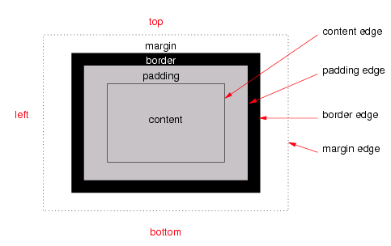

Hieronder zie je een box-model
Leg uit wat de volgende termen betekenen: content, padding, margin en border.
Content: het element waaruit het boxmodel bestaat. bijvoorbeeld een stuk tekst of een img.
Padding: de vulling. Kortom de ruimte tussen een rand en de contant.
Border: De rand onm de box. Deze kan gekleurd, solid gestreept etc.
Margin: De onzichtbare ruimte om de border. Deze gebruik je om afstanden aan te geven ten opzichte van endere elementen of schermranden.